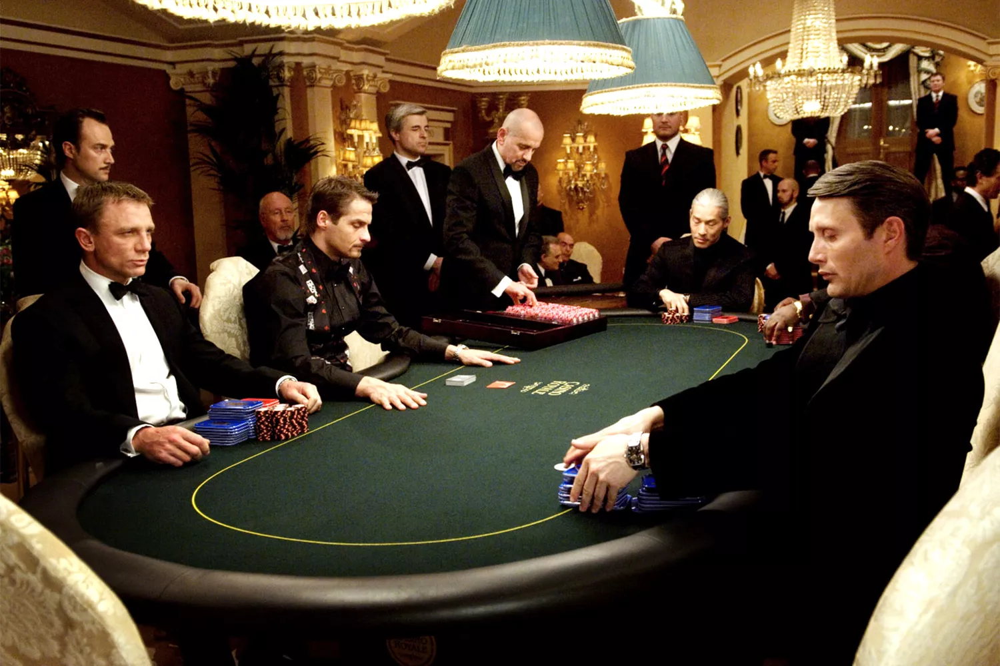

graph TD;
A[Start: 1,000 Women] -->|10% Pregnant| B[Pregnant]
A -->|90% Not Pregnant| C[Not Pregnant]
B -->|98% Test Positive| D[Test Positive]
B -->|2% Test Negative| E[Test Negative]
C -->|1% Test Positive| F[Test Positive]
C -->|99% Test Negative| G[Test Negative]
style D fill:#f9f,stroke:#333,stroke-width:4px
style F fill:#f9f,stroke:#333,stroke-width:4px
11 Probability
12 Probability Refresher

12.1 Basic Definitions
Probability: A measure of the likelihood of an event happening.
Experiment: An action with a measurable outcome (e.g., rolling a die).
Outcome: The result of a single trial of an experiment.
Sample Space (S or \(\Omega\) ) : All possible outcomes of an experiment.
Event: A subset of the sample space.
Example: Tossing a coin:
- Experiment: Tossing the coin.
- Sample Space: {Heads, Tails}.
- Event: Getting Heads.
12.2 Examples of Sample Space
- Throwing a dice:
- \(\Omega\) = {1, 2, 3, 4, 5, 6}
- Tossing a coin three times:
- \(\Omega\) = {HHH, HHT, HTH, HTT, THH, THT, TTH, TTT}
- Tossing a coin three times and observe the number of H’s:
- \(\Omega\) = {0, 1, 2, 3}
- Tossing a coin until we obtain a Head:
- \(\Omega\) = {H, TH, TTH, TTTH, …}; (infinite)
12.3 Sets and Set Operations
Introduction to sets using Venn diagrams.
- Union (A ∪ B): Elements in either set A, set B, or both.
- Intersection (A ∩ B): Elements common to both sets.
- Complement (A’): Elements not in set A.
Example: Given a set of numbers from 1 to 10, find the union, intersection, and complement for subsets A = {odd numbers} and B = {numbers less than 5}.
- Union (A ∪ B): {1, 2, 3, 4, 5, 7, 9}
- Intersection (A ∩ B): {1, 3}
- Complement of A (A’): {2, 4, 6, 8, 10}
- Complement of B (B’): {5, 6, 7, 8, 9, 10}
12.4 Probability Rules
- Addition Rule: \(P(A ∪ B) = P(A) + P(B) - P(A ∩ B)\)
- Multiplication Rule: \(P(A ∩ B) = P(A) \times P(B | A)\)
- Complementary Rule: \(P(A') = 1 - P(A)\)
Example: A box contains 2 red balls, 3 blue balls, and 5 green balls. What is the probability of drawing a red or a blue ball?
- Total balls = 10
- Red balls (A) = 2, Blue balls (B) = 3
- P(A) = 2/10, P(B) = 3/10
- P(A ∪ B) = P(A) + P(B) = 2/10 + 3/10 = 5/10 = 1/2
12.5 Conditional Probability
Conditional Probability is the probability of an event occurring given that another event has already occurred.
- Formula: \(P(A | B) = \frac{P(A ∩ B)}{P(B)}\)
- Example: Probability of drawing an ace after a king from a deck of cards.
Example: What is the probability of drawing 2 aces in a row from a deck of 52 cards?
- P(Ace on first draw) = \(\frac{4}{52}\)
- P(Ace on second draw given first was Ace) = \(\frac{3}{51}\)
- P(Two Aces in a row) = \(P(\text{First Ace}) \times P(\text{Second Ace} ∣ \text{First Ace})\)
- P(Two Aces in a row) = \(\frac{4}{52} \times \frac{3}{51} ≈ 0.0045\)
- Explanation: The probability of each event is conditioned on the preceding draw reducing the total number of cards and aces.
13 Probability Exercises
13.1 Exercise #1
If a woman takes an early pregnancy test, she will either test positive, meaning that the test says she is pregnant, or test negative, meaning that the test says she is not pregnant. Suppose that if a woman really is pregnant, there is a 98% chance that she will test positive. Also suppose that if a woman really is not pregnant, there is a 99% chance that she will test negative.
Suppose that 1,000 woman take early pregnancy tests and that 100 of them truly pregnant. What is the probability that a randomly chosen woman from this group will test positive?
Suppose a woman tests positive. What is the probability that she really is pregnant?
13.1.1 Overview
This analysis uses a sample of 1,000 women undergoing early pregnancy tests, with the following assumptions: - If a woman is truly pregnant, the test is positive 98% of the time. - If a woman is not pregnant, the test is negative 99% of the time.
13.1.2 Total Population:
- 1,000 women, with 100 truly pregnant (10%) and 900 not pregnant (90%).
13.1.3 Probability Calculations:
- Probability of a Positive Test (Overall)
- \[ P(\text{Test Positive}) = P(\text{Test Positive | Pregnant}) \times P(\text{Pregnant}) + P(\text{Test Positive | Not Pregnant}) \times P(\text{Not Pregnant}) \]
- \[ = 0.98 \times 0.1 + 0.01 \times 0.9 = 0.107 \]
- Result: 10.7% chance of testing positive across all 1,000 women.
- Probability of Being Pregnant Given a Positive Test
- \[ P(\text{Pregnant | Test Positive}) = \frac{P(\text{Test Positive | Pregnant}) \times P(\text{Pregnant})}{P(\text{Test Positive})} \]
- \[ = \frac{0.98 \times 0.1}{0.107} \approx 0.916 \]
- Result: 91.6% chance of being pregnant if tested positive.
13.1.4 Tree Diagram for Probability Calculation
This diagram illustrates the probability pathways based on pregnancy status and test outcomes:
13.2 Exercise #2
A box contains 3 blue, 2 green, and 4 red marbles. If you draw 2 marbles at random without replacement, what is the probability both are green?
13.2.1 Probability Calculation: Drawing Two Green Marbles
Given a box with 3 blue, 2 green, and 4 red marbles, we are asked to find the probability of drawing two green marbles when drawing two marbles at random without replacement. Here’s the step-by-step calculation:
13.2.2 Total Number of Marbles
- Blue Marbles: 3
- Green Marbles: 2
- Red Marbles: 4
- Total: 3 + 2 + 4 = 9 marbles
13.2.3 Total Ways to Draw 2 Marbles from 9
Using the combination formula \(\binom{n}{k}\) which represents the number of ways to choose \(k\) items from \(n\) items without regard to the order, we calculate:
\[ \binom{9}{2} = \frac{9 \times 8}{2 \times 1} = 36 \]
13.2.4 Ways to Draw 2 Green Marbles from 2 Available
There are 2 green marbles and we need to draw both:
\[ \binom{2}{2} = \frac{2 \times 1}{2 \times 1} = 1 \]
13.2.5 Probability Both Marbles Drawn Are Green
The probability is the ratio of the number of favorable outcomes (drawing 2 green marbles) to the total number of outcomes (drawing any 2 marbles):
\[ \text{Probability} = \frac{\text{Number of ways to draw 2 green marbles}}{\text{Total number of ways to draw 2 marbles}} = \frac{1}{36} \]
13.3 Exercise #3
A bag contains 5 white and 7 black balls. Two balls are drawn successively without replacement. What is the probability that one is white, and one is black?
13.3.1 Overview
Given a bag containing 5 white and 7 black balls, we are asked to calculate the probability of drawing two balls successively without replacement where one ball is white and the other is black.
13.3.1.1 1. Probability of Drawing a White Ball First, then a Black Ball
- Probability of First Ball Being White: Since there are 5 white balls out of 12 total balls, \[ P(\text{White first}) = \frac{5}{12} \]
- Probability of Second Ball Being Black (after one white is taken): Now, 7 black balls are among the remaining 11 balls, \[ P(\text{Black second | White first}) = \frac{7}{11} \]
- Combined Probability for this Sequence: \[ P(\text{White first, Black second}) = \frac{5}{12} \times \frac{7}{11} = \frac{35}{132} \]
13.3.1.2 2. Probability of Drawing a Black Ball First, then a White Ball
- Probability of First Ball Being Black: There are 7 black balls out of 12 total balls, \[ P(\text{Black first}) = \frac{7}{12} \]
- Probability of Second Ball Being White (after one black is taken): Now, 5 white balls are among the remaining 11 balls, \[ P(\text{White second | Black first}) = \frac{5}{11} \]
- Combined Probability for this Sequence: \[ P(\text{Black first, White second}) = \frac{7}{12} \times \frac{5}{11} = \frac{35}{132} \]
13.3.1.3 Total Probability
Adding these two mutually exclusive probabilities gives: \[ P(\text{One white, one black}) = \frac{35}{132} + \frac{35}{132} = \frac{70}{132} \]
This simplifies to: \[ \frac{70}{132} = \frac{35}{66} \approx 0.5303 \]
14 Probability Simulation

14.1 What is the random Package?
- The
randompackage is a built-in Python library used to generate random numbers and perform random operations. - It supports generating:
- Random numbers (integers, floats).
- Random selections from data structures (lists, strings, etc.).
- Values from various statistical distributions.
14.2 Why Use the random Package?
- Simulations and modeling.
- Games and decision-making.
- Sampling and data shuffling.
- Cryptography and secure random number generation (use secrets for cryptographic applications).

14.3 Main Methods of the random Package in Python
| Method | Description | Code Example | Sample Output |
|---|---|---|---|
random() |
Returns a random float in [0.0, 1.0). |
random.random() |
0.764532 |
uniform(a, b) |
Random float in [a, b]. |
random.uniform(5, 10) |
7.8934 |
randint(a, b) |
Random integer in [a, b] (inclusive). |
random.randint(1, 10) |
4 |
randrange(start, stop, step) |
Random number from range with step. | random.randrange(0, 20, 5) |
10 |
choice(seq) |
Random element from a sequence. | random.choice(['apple', 'banana']) |
'banana' |
choices(pop, weights, k) |
k random elements with optional weights. |
random.choices(['a', 'b'], [10, 1], k=3) |
['a', 'a', 'b'] |
sample(pop, k) |
k unique random elements. |
random.sample(range(10), 3) |
[2, 6, 9] |
shuffle(seq) |
Shuffles the elements of a list in place. | lst = [1, 2]; random.shuffle(lst); lst |
[2, 1] |
seed(a) |
Sets the seed for reproducibility. | random.seed(42); random.random() |
0.6394267984578837 |
gauss(mu, sigma) |
Random value from Gaussian distribution. | random.gauss(0, 1) |
-0.143265 |
15 Probability using Python Exercises
For the following probability problems, solve them analytically first. Then, write a Python program to simulate the situations and find the approximate probabilities. Compare these results with your analytical findings.
15.1 Exercise #1: Tossing Coin
Calculate the probability of obtaining a head when tossing a fair coin once
15.1.1 Analytical
15.1.1.1 Overview
When you toss a fair coin, it can land either heads or tails. With the coin being fair, each outcome has an equal probability of occurring.
15.1.1.2 Calculation
The probability of obtaining a specific outcome (like a head) is determined by the ratio of the number of favorable outcomes to the total number of possible outcomes:
- Number of favorable outcomes (obtaining a head): 1
- Total number of possible outcomes (either head or tail): 2
15.1.1.3 Formula for Probability
The probability \(P\) of getting a head is given by:
\[ P(\text{Head}) = \frac{\text{Number of favorable outcomes}}{\text{Total number of possible outcomes}} = \frac{1}{2} \]
15.1.1.4 Conclusion
This results in a probability of \(\frac{1}{2}\), or 0.5, which translates to a 50% chance of the coin landing heads up in a single toss. This demonstrates the equal likelihood of either outcome in a fair coin toss.
15.1.2 Simulation
import random
def simulate_coin_toss(trials):
count_heads = 0 # Initialize the count of heads
for _ in range(trials):
# Randomly generate 0 for tails or 1 for heads
if random.randint(0, 1) == 1:
count_heads += 1 # Increment if the result is heads
return count_heads / trials # Calculate the probability of heads
# Number of trials for the simulation
num_trials = 100000
# Perform the simulation
simulate_coin_toss(num_trials)0.4986115.2 Exercise #2: Rolling Dice
Calculate the probability of rolling a number greater than 4 at least once in two rolls.
15.2.1 Analytical
15.2.1.1 Overview
To calculate the probability of rolling a number greater than 4 at least once in two rolls of a fair six-sided die, you can follow these steps:
- Probability of rolling a number greater than 4 in one roll:
- Only two numbers (5 and 6) out of six possible outcomes are greater than 4. Thus, the probability for one roll is: \[ \frac{2}{6} = \frac{1}{3} \]
- Probability of not rolling a number greater than 4 in one roll:
- The probability is the complement of rolling a number greater than 4, calculated as: \[ 1 - \frac{1}{3} = \frac{2}{3} \]
- Probability of not rolling a number greater than 4 in two rolls:
- If each roll independently has a \[ \frac{2}{3} \] chance of not rolling a number greater than 4, then the probability of this happening in two consecutive rolls is: \[ (\frac{2}{3})^2 = \frac{4}{9} \]
- Probability of rolling a number greater than 4 at least once in two rolls:
- This is calculated by subtracting the probability of not rolling a number greater than 4 in two rolls from 1: \[ 1 - \frac{4}{9} = \frac{5}{9} \]
Therefore, the probability of rolling a number greater than 4 at least once in two rolls of a fair die is \[ \frac{5}{9} \], or approximately 55.56%.
15.2.2 Simulation
import random
def simulate_dice_rolls(trials):
count_success = 0
for _ in range(trials):
roll1 = random.randint(1, 6)
roll2 = random.randint(1, 6)
# Check if either of the rolls is greater than 4 (i.e., a 5 or 6)
if roll1 > 4 or roll2 > 4:
count_success += 1
return count_success / trials
# Number of trials for the simulation
num_trials = 100000
# Perform the simulation
simulate_dice_rolls(num_trials)0.5547215.3 Exercise #3: Drawing Balls from a Bag
A bag contains 3 red balls and 2 blue balls. You randomly draw 2 balls without replacement. What is the probability that both balls are red?
15.3.1 Analytical
15.3.1.1 Overview
To calculate the probability of drawing 2 red balls without replacement from a bag of 5 balls (3 red and 2 blue), consider:
Total possible outcomes:
The total number of ways to draw 2 balls from 5 is given by the combination formula: \[ \binom{5}{2} = \frac{5!}{2!(5-2)!} = 10 \]Favorable outcomes:
The number of ways to draw 2 red balls from the 3 available is: \[ \binom{3}{2} = \frac{3!}{2!(3-2)!} = 3 \]
15.3.1.2 Probability Calculation
The probability is calculated as the ratio of favorable outcomes to total outcomes: \[ P(\text{Both balls red}) = \frac{\text{Number of favorable outcomes}}{\text{Total outcomes}} = \frac{3}{10} = 0.3 \]
So, the probability of drawing 2 red balls is 0.3, or 30%.
15.3.2 Simulation
import random
def simulate_ball_draw(trials):
count_red_pairs = 0
for _ in range(trials):
bag = ['R', 'R', 'R', 'B', 'B'] # 3 red balls, 2 blue balls
draw = random.sample(bag, 2) # Randomly draw 2 balls without replacement
if draw.count('R') == 2: # Check if both balls are red
count_red_pairs += 1
return count_red_pairs / trials # Calculate the probability
# Number of trials for the simulation
num_trials = 100000
# Perform the simulation
simulate_ball_draw(num_trials)0.29992